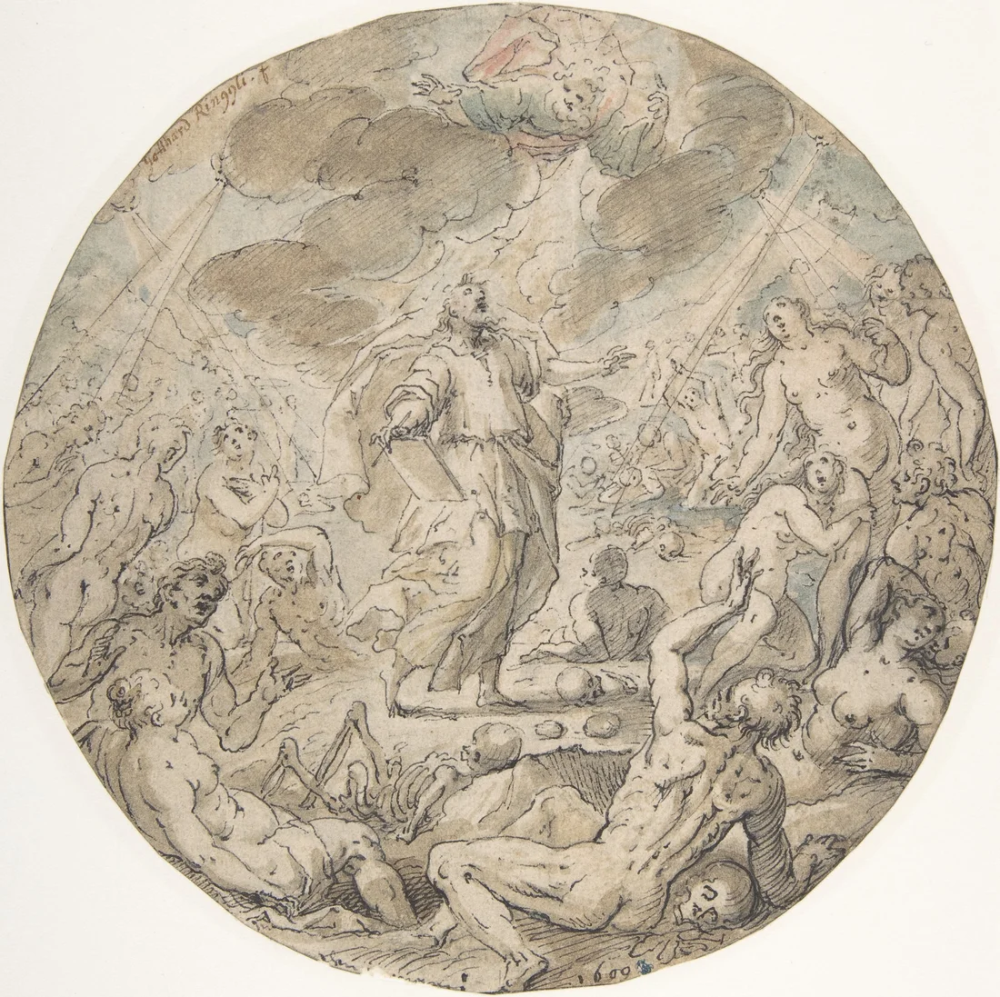
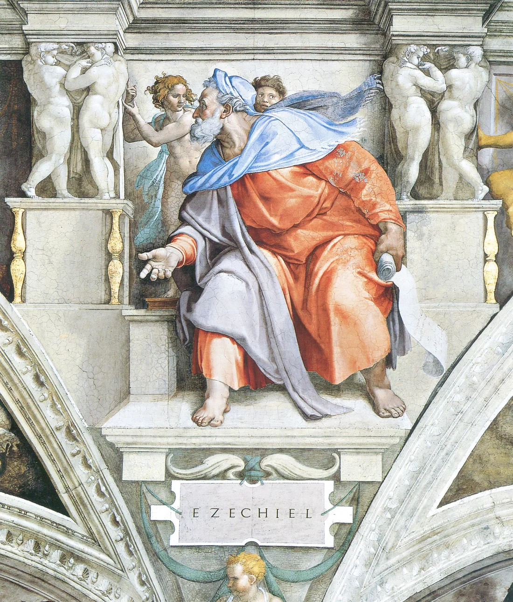
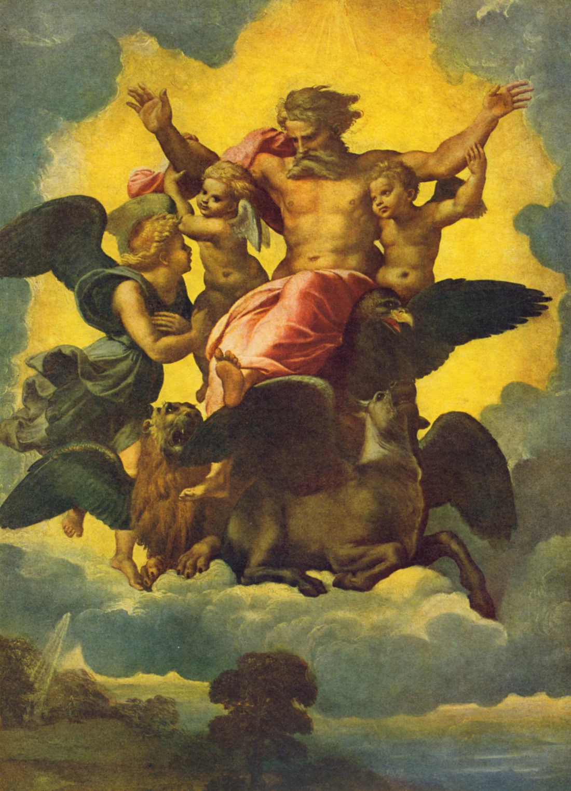

Babylon takes King Jehoiachin and other Judeans into exile. Ezekiel belongs to this displaced community.
Israel, Covenant & Prophets · Grades 6–12 · 50–60 minutes
Ezekiel
Can a scattered people find hope after losing their home?
Ezekiel is a priest and prophet among Judean exiles in Babylon. His visions confront wrongdoing and announce renewal beyond Jerusalem’s destruction.
Begin the investigation →The dry bones: read the explanation
Ezekiel 37 shows scattered bones becoming a living people. Predict the identification the passage itself gives.
Choose a prediction, then compare it with the passage.

Where this book fits

- Covenant
- Kingdom
- Prophetic warning
- Exile · Ezekiel
- Restoration
Ezekiel receives his opening vision beside the Chebar canal in Babylonia (1:1–3). His priestly background makes the temple and God’s presence central concerns. Before these events, Israel’s covenant calls for loyalty to God and care for neighbors. These books connect the failures of leaders and communities with judgment, grief, and the hope of restoration.
Today’s goals: trace the book’s movement; explain one image using its passage; distinguish the text’s claim from a later interpretation.
“Major” refers to the relative length of this group’s books, not a ranking of prophets’ importance. Christian Bibles commonly group Isaiah, Jeremiah, Lamentations, Ezekiel, and Daniel here. Jewish Bibles organize these books differently.
A prophet far from Jerusalem
The fifth year of Jehoiachin’s exile (1:2). God’s glory appears in Babylonia: distance from Jerusalem does not put the exiles beyond God’s reach.
The temple is destroyed. News reaches Ezekiel in 33:21; the book’s later chapters develop hope for a renewed people.
Follow the presence: glory appears in exile (1) → departs the temple (10–11) → returns in the restoration vision (43). Ask how this movement answers the fear that everything has been lost.
Visual reading guide · Ezekiel 1
Read the vision alongside historical art
Read Ezekiel 1 from the creatures and wheels upward to the expanse and throne. Ezekiel repeatedly uses comparison language. Study Raphael’s painting alongside the passage: how does the artist translate that language into a scene?


Look closely: What does the vision’s movement suggest about God’s presence beyond Jerusalem? Which features signal majesty or holiness? Support each answer with a verse.
Trace the whole book
Choose a section, read the linked passage in your Bible, and answer with a verse. Summaries are teaching paraphrases, not Scripture quotations.
Discuss with evidence
Read the focus passage at Bible GatewayReading lenses and teacher context
Ezekiel’s symbolic actions and visions communicate theological claims. Do not read every image as a literal machine or a modern news code. Chapter 37 itself identifies the bones with the whole house of Israel. Christians also read resurrection themes here, but that connection should be distinguished from the explanation in 37:11–14.
Track the presence through the book
Compare: What stays consistent across these scenes? What changes? How does the final vision answer the loss described earlier in the book?
Read the passages: chapter 1 · chapter 10 · chapter 11 · chapter 43.
Close-reading workshop · Ezekiel 37:1–14
What kind of claim is this?
Read Ezekiel 37:1–14 and its reading notes. Sort each claim: an observation describes the vision; the passage’s explanation identifies its meaning; a later interpretation connects it with another belief or text.
Word study: breath, wind, spirit
The Hebrew word ruach can mean breath, wind, or spirit. Compare 37:5, 9, and 14 in two translations. How does the movement from lifeless bodies to God’s spirit connect the image to renewal? Related meanings do not make every occurrence interchangeable; read each sentence in context.
Check your reading
Explain with evidence
Choose an image or action from this book. What does the passage show? What does it explain? What does your reading add? Include a verse reference and connect your explanation to the big question.
Build a four-sentence explanation
- Observe: In Ezekiel ___, the vision shows…
- Explain: Verse ___ identifies or explains this as…
- Connect: For the exiles, this offers hope because…
- Name your lens: A later reading might connect this to…; that connection goes beyond…
Extension: Compare the failed shepherds in 34:1–16 with the renewed heart in 36:24–28. What must change in both leadership and the people?
Notes save in this browser as you write.
Read and continue
USCCB: Ezekiel introduction and reading notes · Kingdoms, Prophets & Exile
Teacher plan · 50–60 minutes
5 minutes: locate the book in the story. 10 minutes: predict, read, and compare. 20 minutes: assign reading sections to pairs and build a whole-book explanation. 10 minutes: check answers and discuss evidence. 10 minutes: write an explanation. For younger readers, use the first passage and explain the image orally. For extension, compare two translations and distinguish textual observations from interpretive claims. Let students discuss textual grief without requiring personal disclosures.